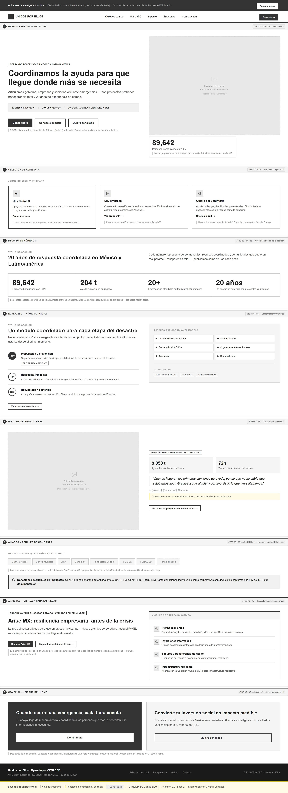
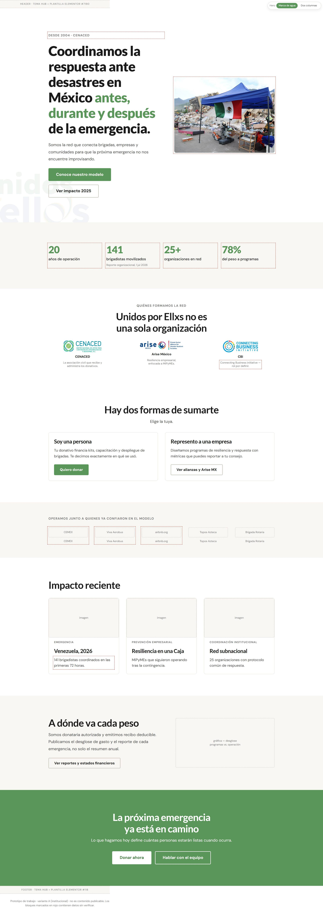
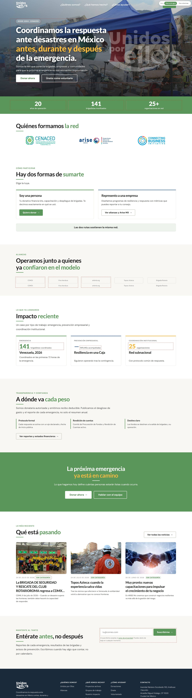
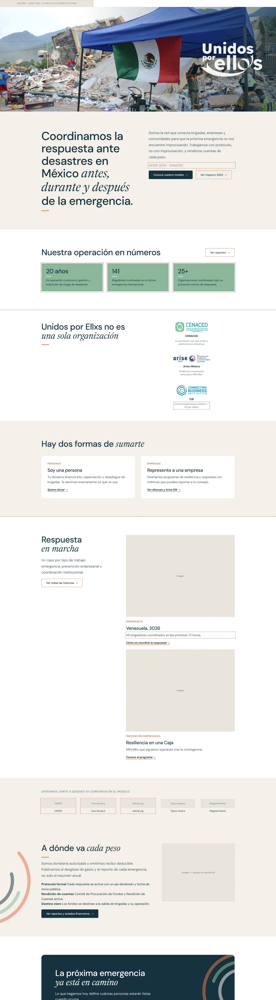
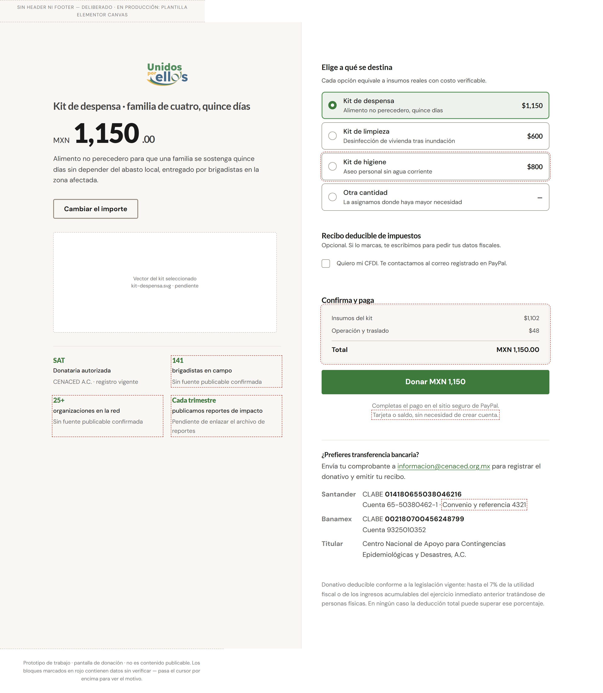

Unidos por Ellxs
The anchor brand. Connects brigades, companies and communities into a multi-sector response network.
The digital ecosystem of a Mexican civil society organization that coordinates disaster response. A site redesign built on a single finding: the homepage was failing because it was trying to do two incompatible jobs on the same screen.
Unidos por Ellxs coordinates disaster response in Mexico: it connects volunteer brigades, companies and communities before, during and after an emergency, and it is where the donations that fund that response arrive.
Unidos por Ellxs is not a single organization. It is a coordination platform that sits on top of a civil society association, and it shares its public surface with a business-resilience programme aimed at small companies. Three names, three audiences, three different reasons to visit — all of them arriving at the same homepage.
The audit scored the existing site 4.5 out of 10. But the score was not the finding. The finding was that the problem was one of message before it was one of design: the homepage was simultaneously trying to establish institutional authority for someone who had never heard of the organization, and to persuade someone already convinced to donate. Those two jobs pull the same screen in opposite directions.
The anchor brand. Connects brigades, companies and communities into a multi-sector response network.
The civil society association that receives and administers donations, and issues tax receipts.
Corporate resilience aimed at micro and small businesses. Solves a company's job, not an audience of its own.
The architectural decision that unlocked the rest was to stop treating the homepage as the place where donations happen. Cold traffic — someone who found the organization through search and does not yet know who it is — needs authority and transparency. Warm traffic — someone redirected from a campaign post about an earthquake that happened yesterday — needs the shortest possible path to a completed donation.
The separation was pressure-tested in a session with the digital team at UNICEF México, who reported that their redirected traffic must not pass through an intermediate landing page — their donation interface collapses context and form into a single screen. One nuance mattered: they have a media budget that guarantees pre-persuaded traffic, and this organization does not. The separation still applies, but for a different reason.
The practical consequence for development is the part that survives past this redesign: the donation interface is a reusable per-campaign template, not a new page built each time an emergency happens.
Arrives through search or word of mouth with no prior relationship to the organization and no reason yet to trust it with money.
Arrives from a social post or a campaign link during an active emergency, already persuaded and looking for the button.
Opens with what the organization does and since when. Deliberately does not ask for a donation in the first screen — asking before giving reasons to trust inverts the order of the work.
Context and form on one screen, outside the main menu, reachable from the top bar and from direct campaign links. Reusable per campaign — Venezuela today, an earthquake tomorrow.
The individual donor's job turned out to be the one that governs the homepage. It is not "give money" — it is closer to converting anxiety into something verifiable. The push is a worry with nowhere to go; the anxiety that stops the action is where does my money actually end up; and the inertia is that sharing a post on social already feels like having done something.
That reading is what makes Transparency a page rather than a block. It answers the donor's main anxiety head-on, and it doubles as due diligence for a company evaluating a partnership.
Channel a specific worry into a concrete, verifiable commitment — and get to see themselves as someone who acts, not only someone who shares.
Find a partner with a track record and exportable metrics, so a CSR budget can be defended to the board without reputational risk.
Know whether they qualify and what the next concrete step is, rather than filling in a form that leads nowhere. Flagged as an assumption — no direct research behind it yet.
Three architectural moves did most of the work. Transparency became a page, not a paragraph, because it answers the anxiety that stops donations. Emergencies became an archive, not an active campaign section, so that the site stops accumulating orphaned emergency pages every time a crisis passes. And Arise MX moved down to sit under the company section — it solves a business job and has no audience of its own — while keeping its existing URL intact.
The donation interface sits outside the main menu entirely. It is a cross-cutting destination, reachable from the top bar, from contextual calls to action, and from direct campaign links.
What we do and since when. Immediate authority. Does not ask for a donation.
Proof without adjectives. Every figure carries a source and a date, or it does not ship.
Two routes — person or company. Placed third, not first: asking someone to classify themselves before giving them reasons to trust inverts the order.
External validation with logo and name. Third-party marks held back pending written authorization.
Three cases showing continuity, not only crisis response.
Spend breakdown and per-emergency reporting. Disarms the donor's principal anxiety.
Donate or talk to the team — an exit into either lane, without forcing a choice earlier.
The process rule on this project is that structure and copy get approved before the design system is applied to anything. It exists because the alternative — showing stakeholders a beautiful screen and asking them to react to the words inside it — reliably produces feedback about the colour of a button when the argument of the page is what is broken.
The load-bearing line of the hero is "before, during and after the emergency." That phrase is what separates this organization from the ones that only appear during the crisis, and it was written into the wireframe rather than left to be discovered later.

An organization that asks strangers for money during a disaster cannot afford a number it cannot defend. The rule on this project is absolute: no figure ships without a verifiable source and a date. Applying it honestly meant discovering how much of the available material did not survive it.
So the prototypes annotate themselves. Every figure without documentary backing is wrapped in a red dashed outline directly in the mockup, which turns the design review into a data review at the same time. Three items are currently held back that way: a headline percentage of spend going to programmes, which comes from an internal draft rather than a financial statement and carries the highest reputational risk on the page; the organization's stated years of operation, awaiting confirmation for unqualified public use; and the use of three partner brand marks, awaiting written authorization. A fourth is an open contradiction between two internal figures for the same count of mobilized brigade members.
None of them are in the shipped copy. The red outlines are the reason.



The precedent for the template already existed. During an earthquake emergency the previous year, a standalone donation landing page had been built and shipped inside WordPress as embedded HTML, CSS and JavaScript — before any design system existed, which is why it shares no tokens or components with the rest of the site. It worked, and it carried copy, structure and trust decisions already validated in production. Re-inventing those would have been the expensive kind of tidy.
Two technical decisions from that page are worth keeping. All of its CSS is scoped under a single component class with its own reset, which is the reason it coexists with a purchased theme without fighting it. And it uses container queries rather than media queries — it responds to the width of the widget, not the width of the viewport, because the page builder's editor renders the widget narrow inside a wide viewport and media queries reported the wrong thing.
Decisions taken for the emergency campaign, and carried into the template: no fundraising goal and no progress bar; no recurring donation option, because an emergency campaign is not a subscription; and tax deductibility stated explicitly, because the receiving entity can issue receipts and that is a material part of the donor's decision.

The architecture, the wireframe and three homepage directions are done. The design system exists as tokens and components, the production bundle is generated, and none of it is deployed — because the process rule says the design system is not applied until structure and copy are approved, and that approval is sitting with two stakeholders. The payment integration is written and installed as a plugin with its own database table and endpoint, and it is blocked one step earlier, on credentials for the payment account needed to run the sandbox test. Sandbox first, production second; that order does not get skipped to make a status report look better.
What I'm proud of: the bifurcation. It reframed a redesign request into an architecture decision, and the reusable donation template means the next emergency does not start from a blank page. What I'd do differently: the volunteer job is still an assumption with no research behind it, and I documented it as one rather than designing confidently on top of it — but I should have run those interviews while the wireframe was waiting for approval instead of treating the block as idle time.
Sitemap, bifurcated home decision, and the donation interface defined as a reusable template.
Institutional, campaign and editorial — built on shared tokens, differing in composition.
Bundle generated, not deployed. Blocked on stakeholder approval of structure and copy, by process rule.
Integration written and installed. Sandbox test blocked on account credentials — and it runs before production, not after.